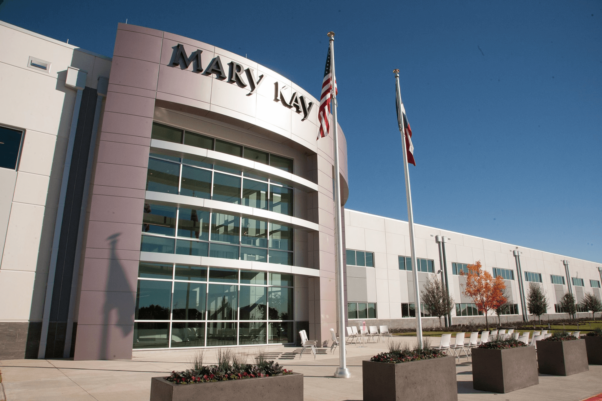
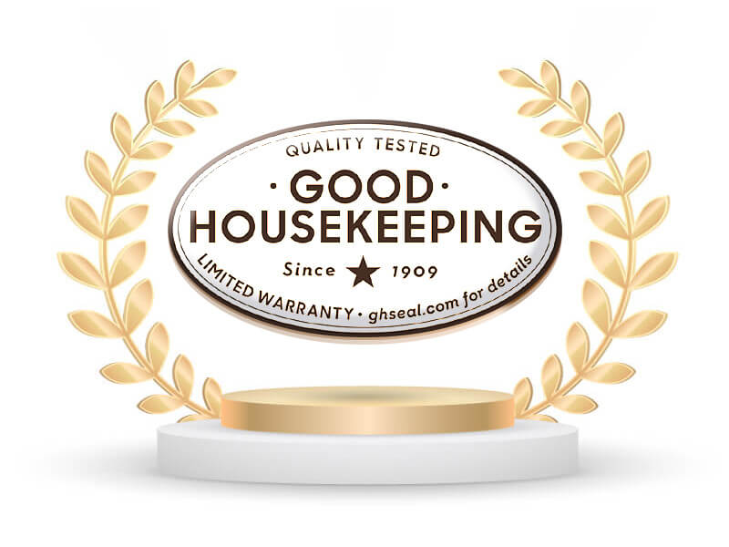
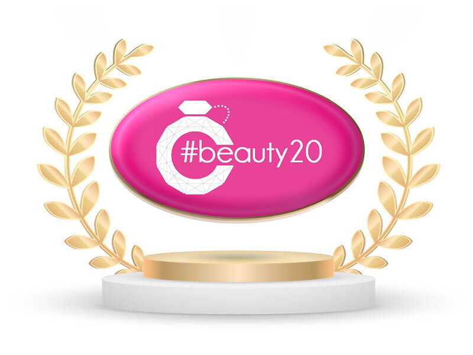

科研創新
- 超過200項優質產品，包括護膚品、彩妝、身體護理、防曬、香水及營養保健品。
- 超過200位來自各領域科學家的研發團隊
- 擁有1,500＋專利項目
- 每年耗資數百萬美元研發
- 每年超過50萬次試驗確保產品安全性及功效
- 投資超過一億美元建設占地超過42000平方米的R3全球製造與研發中心，擁有先進的研發實驗室、尖端的製造技術，還擁有全新的現代化的零污染填埋設施。
- 超過10次獲得 #Beauty 20 award 國際美妝大賞，被視為最具創新品牌
- 多項產品獲得#Goodhousekeeping 國際美妝雜誌標章認可

美國達拉斯R3實驗室

多項產品獲得Goodhousekeeping 國際美妝雜誌標章認可。

超過10次獲得Beauty 20 award國際美妝大賞，被視為最具創新品牌。